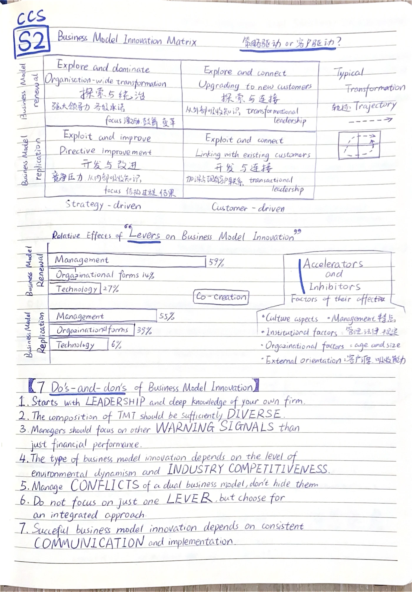

Original handwriting / Page 04 of 09
Transformation routes and the levers of innovation
The original page is preserved as written. Related English guides are listed alongside it.


The original page is preserved as written. Related English guides are listed alongside it.
